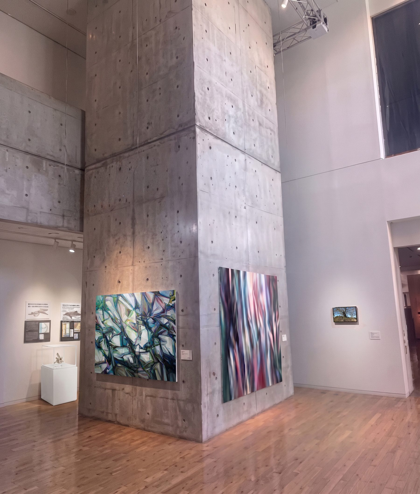
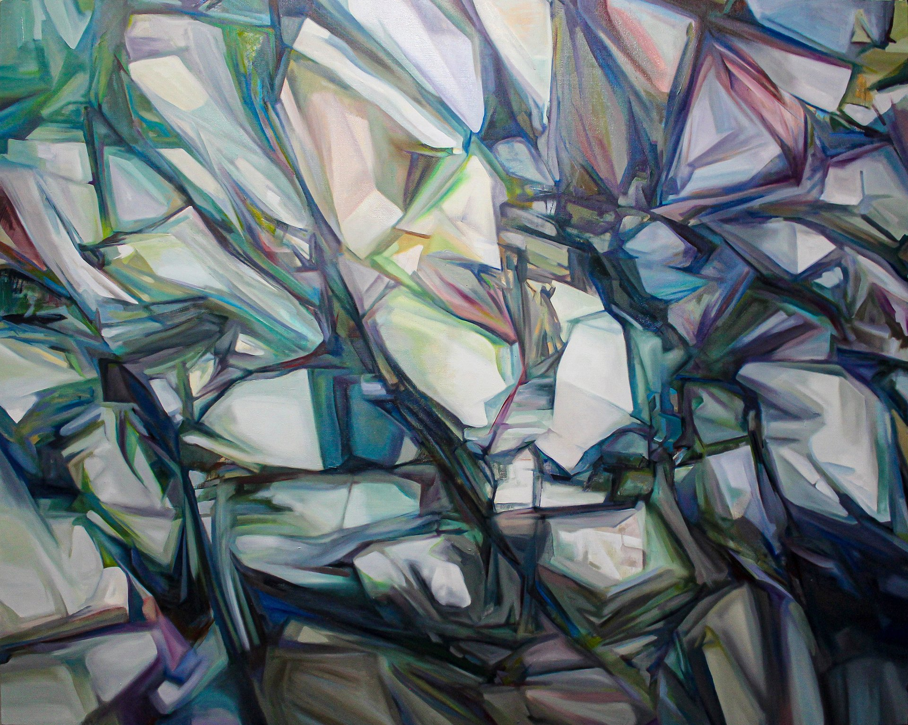
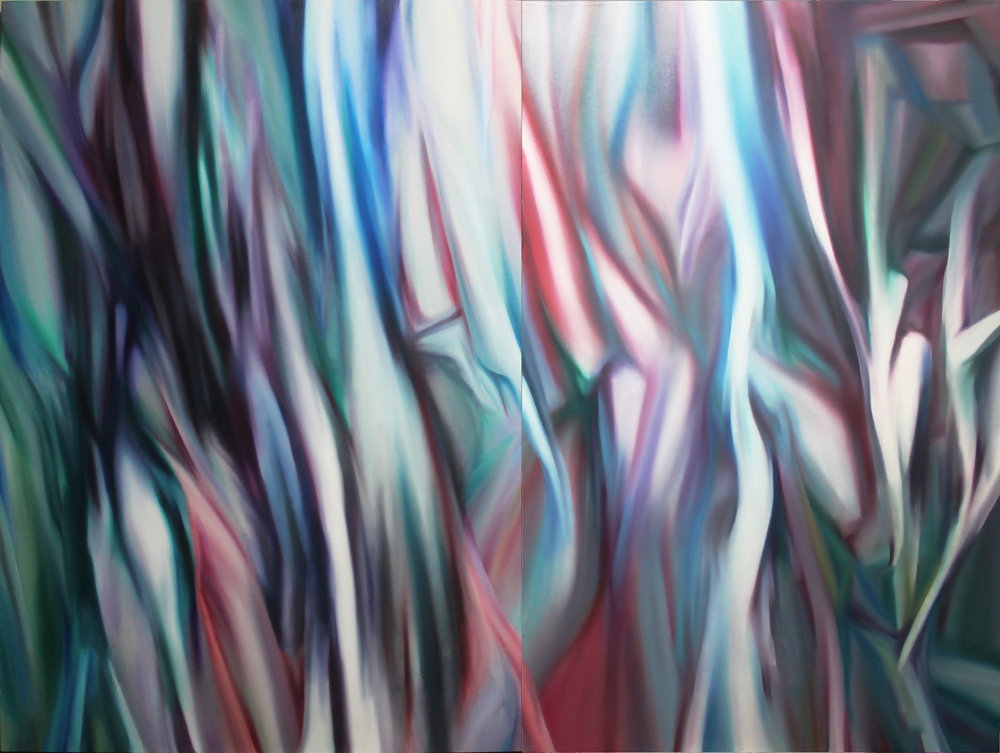
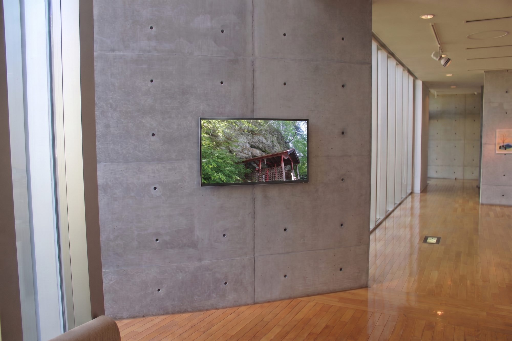
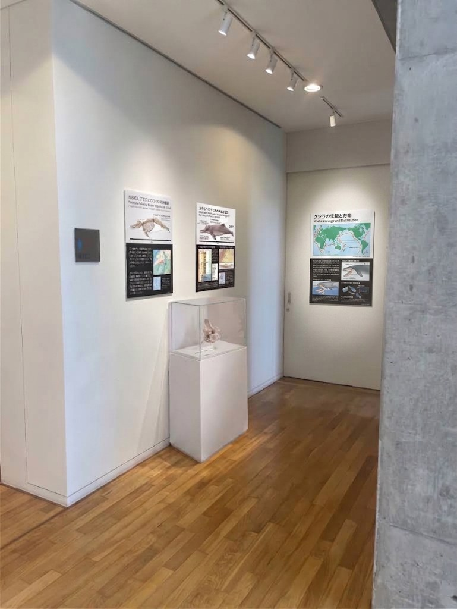

絵画（油彩画）による多層的な平面空間 両風景
油彩の透明層（グレーズ）の重なりを通して、二つの風土を平面上に堆積させる、本展示の核となる要素。柱の前面には稲荷神社と川の石を主題とした小海町の風景を、奥側面には『林（3）』を中心とした左美都の風景を配置し、柱の稜線を境界として静かに向き合わせる。

Koumi Town Highland Museum of Art — Hall 3
小海の海（うみ）、左美都の層
01企画の趣旨
Concept
標高1,100mに位置する小海町高原美術館は、山々に囲まれた「海なき地」でありながら、豊かな水の記憶と物語を秘めた土地である。
かつて千曲川を遡って海を目指したという「くじらの夫婦」の伝承。そして八ヶ岳崩壊による地質的変容の歴史——湖沼群の生誕。標高こそ高いが、この土地の地層には、幾重にも折り重なった水の記憶が眠っている。
本展示は、津田がこれまで扱ってきた「左美都の風景」と、「小海の伝承と実在の風景」という、地理的・時間的に遠く隔たった二つの風土を、Hall 3という一つの局所的な展示空間内に交差させる。重厚なコンクリートの柱を境界としながら、両者は反発するのではなく、地層のように静かに重なり合う。
スクロールすると、二つの風土の輪郭が近づいていく。
02展示の要素
Four Layers of a Single Site
本展示は、単一のメディアに留まらず、空間全体を多層的なインスタレーションとして構成する要素で成り立っている。絵画・映像・立体・建築という異なる層が、Hall 3という一つの現場のなかで重なり合う。
— 四つの層が、ひとつの現場に重なる
油彩の透明層（グレーズ）の重なりを通して、二つの風土を平面上に堆積させる、本展示の核となる要素。柱の前面には稲荷神社と川の石を主題とした小海町の風景を、奥側面には『林（3）』を中心とした左美都の風景を配置し、柱の稜線を境界として静かに向き合わせる。
小海町の実在の風景、あるいはかつて海を目指したくじらの視点のような流動的なイメージを、静的な展示空間に重ね合わせる。入口付近のモニターでは、稲荷神社と川の石の映像をループ再生し、鑑賞者を本編へと静かに導く。
展示ケース内に、陶土によるクジラの架空の骨を展示する。「くじらの夫婦」の伝承に基づく造形で、記憶が密かに蓄積する『洞窟』の概念を小さなスケールで現前させ、鑑賞者の視線をマクロ（広大な風景）からミクロ（内面的な地層）へと誘導する。コウミカワイルカの解説へ
高い天井、重厚なコンクリートの柱、そして自然光を取り込む大窓。美術館の建築構造そのものを一つの『空間』として捉え、複数のメディアを配置することで、地理的・時間的に隔たった風土が交差する特異点をつくり出す。
03展示イメージ
Site Views — Hall 3, Current Condition
以下は現段階のおおまかな展示イメージである。柱の二面それぞれに、小海町の風景（左）と左美都の風景（右）のメイン作品を配し、奥の通路・小部屋へと展示は続いていく。画中の白パネルは、稲荷神社と川の石の風景画（I-B）を仮に示す※未定のプレースホルダー。
暗がりのHall 3を、光で照らして歩いてみてください。隠れている五つの場所を見つけると……？
Fig. 1 — 柱正面よりSite View
04展示構成について
Spatial Layout — ZOC
Zone of Control（ZOC）＝各作品が主に作用する空間的領域。柱の左前面（小海町の風景）と右奥面（左美都の風景）、それぞれの主作品を中心に領域を設定し、柱の稜線＝作品の境界で二つのZOCが重なり合う。番号をタップすると、各作品の解説が開きます。
展示イメージ ／ 柱正面よりFig. 01
※ ZOC（Zone of Control）は各作品が主に作用する空間的領域を示す概念図。二つの円は柱の稜線——実景と架空の風土が接する境界——で重なる。配置は現段階のイメージであり、今後の現地調査・照明計画により精緻化する。
05二つの風景
Two Landscapes, One Ridge
柱の左前面に小海町の風景、奥側面に左美都の風景。実際の会場では柱の角——稜線——が両者を分けています。二枚の油彩を重ね、その境目を稜線として動かせるようにしました。


Koumi小海の風景稲荷神社と川の石
Samizu左美都の風景林（3）
稜線をドラッグ、または矢印キーで動かしてみてください。稜線を左右になぞってみてください。動かした分だけ、二つの風土が入れ替わります。
柱・左前面 ／ 小海町の風景 ZOC
岩肌が崩れ落ちる動的なイメージを、鋭角的な面構成で再構築した油彩画。「くじらの夫婦」と「稲荷神社と川の石」——ふたつの伝承を接続する。
柱・奥側面 ／ 左美都の風景 ZOC
ZOCの中心となるメイン油彩。左美都の風景を表現する主作品。垂直に流れる筆触が、柱の高さと呼応する。
06展示構成 ｜ 導入エリア
Entrance — Introduction
隣接する他作家の展示ゾーンとの境界を尊重し、展示は基本的にHall 3の内部で完結させる。大型モニター1台による映像のループ再生のみとし、視覚的な要素を最小限に抑える。

LOOP PLAYBACK 00:00導入エリアの設置イメージ ｜ 大型モニター1台（壁掛け）Fig. 02
ループ映像スチル ｜ 稲荷神社と川の石通路壁沿いに投影。稲荷神社の参道・岩肌・社殿を捉えた素材カットより。大型モニターでは、静かなループとして流れる。
大型モニターを通路の壁沿いに配置する。稲荷神社と川の石の映像をループ再生し、展示空間への導入とする。
隣接する展示への影響を防ぐ。鑑賞者の視線や意識を静かに本編へと接続する。特に、「くじらの夫婦」と「稲荷神社と川の石」をつなぐ。
いわば展示への「助走」の役割を担う。
07展示構成 ｜ 奥の通路・小部屋
The Whale's Chamber
柱まわりの本編から奥の通路・小部屋へと展示は続く。「くじらの夫婦」の生態・分布にまつわる資料パネルと、その伝承に基づく陶芸作品を展示ケースに収め、神話と実体をつなぐ小さな部屋を構成する。

01 — Room
資料パネルが、伝承の生き物を「実在」の側へと引き寄せる。スクロールすると、視線は部屋の奥へ進んでいきます。
02 — Vitrine
部屋の奥、光の落ちる白い台座。その上の小さな箱の中に、ひとつの造形が佇んでいる。
03 — Bone
広大な風景から、骨のディテールへ。視線のスケールが切り替わるその瞬間に、伝承と実体がつながる。
壁面に「くじらの生態と分布」等の資料パネルを並べ、通路の先に置いた展示ケースの中に、コウミカワイルカ（＝くじら）の骨（陶芸）を静かに佇ませる。
透明なアクリルケースに収められた繊細な造形が、鑑賞者の視線を風景全体というマクロな視点から、骨のディテールというミクロな視点へと静かに誘導する。伝承と実体をつなぐ、空間のアクセントとしての役割を果たす。
Koumi River Dolphin — MLMM 10452
小海の地層から見つかったとされる小型ハクジラ類「コウミカワイルカ」。その姿、化石、地層、そして日本海からの遡上の道のりを、資料パネルとともに詳しく解説します。
08本作品の意義と期待される効果
Where Two Times Meet
「左美都の風景」と「小海の風景」という、本来交わるはずのない二つの時空間を、神話（くじらの夫婦）と地質学的な事実（八ヶ岳崩壊）を視覚言語として編み直しながらひとつの空間に接続する。単なる郷土史の紹介を超えた、普遍的な「土地の記憶」へのアクセスを可能にする。
神話と地質学的事実を視覚言語として再編集し、郷土史の紹介を超えた「土地の記憶」への普遍的なアクセスを可能にする。
架空の風土「左美都」と、実在する「小海」を等価に扱うことで、風景を事実ではなく記憶として鑑賞する視点を提示する。
重厚な油彩画、非物質的な映像の光、そして微細な立体物という異なるメディアの間を回遊することで、鑑賞者は自らの身体感覚を通して風景の多層性を体験する。
静的な展示空間が、過去と現在、神話と実在が交差する動的な「場」へと変容し、鑑賞者自身の内側に新たな風景像を立ち上がらせる。
SAMIZU ／ KOUMI — 特異点 SINGULARITY
静的な展示空間が、過去と現在、
神話と実在が交差する動的な「場」へと変容する。
09左美都の層から
Samizu Ware
五色の魔除け色をえらぶと、その意味があらわれる
SAMIZU WARE
古代の記憶から現代へ。
祈りと〈いと〉が織りなす器。
五色の魔除け
Qあなたの遠景診断
Which Landscape Are You?
4つの質問に直感で答えてください。小海型・左美都型・特異点型——あなたに重なる風景と、会場でいちばん見てほしい作品がわかります。
An Exhibition for Hall 3, Koumi Town Highland Museum of Art
本ページに掲載した空間写真は、いずれも現地確認済みの設置イメージであり、本展示の構成は展示企画書（第3版）をもって確定とする。今後は什器・照明計画等の実務的な詳細を、館内協議のうえ詰めていく。
本ページは、次の2点の資料と現地設置写真を統合した最終提案書（展示作品案 第3版）にもとづく。
・展示企画書「二重の遠景」展示作品案 第2版（2026年8月1日）
・展示エリアおよび空間構成に関する方針案（2026年8月8日）